Projects
status.modern.IE
Current status and future roadmap for interoperable features in the Internet Explorer web platform. Provides details on IE implementation plans, cross-browser support, standardization, and documentation.
modern.IE-static-code-scan
The offline version of the Site Scan tool from modern.IE. This tool statically analyizes your code for common problems to make sure users get the best possible experience on your webpage.
web-platform-tests
Our fork of the W3C Web Platform Test suite where we author and review our contributions to the official tests for W3C web standards.
internetexplorer.github.com

Internet Explorer's GitHub Organization Page.